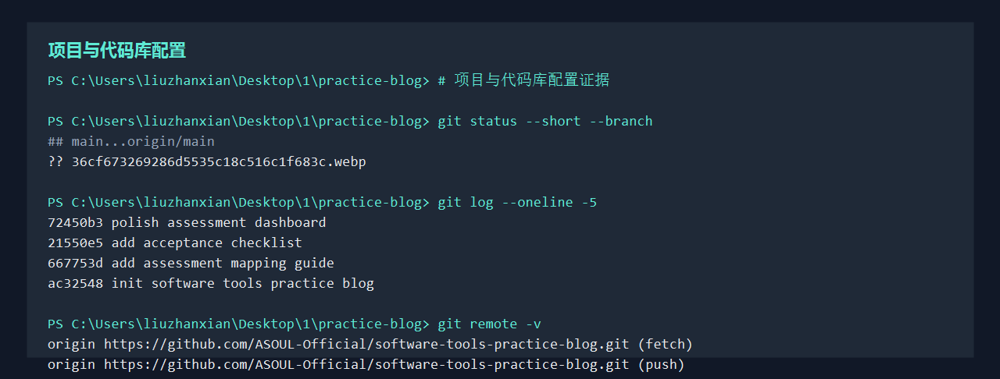
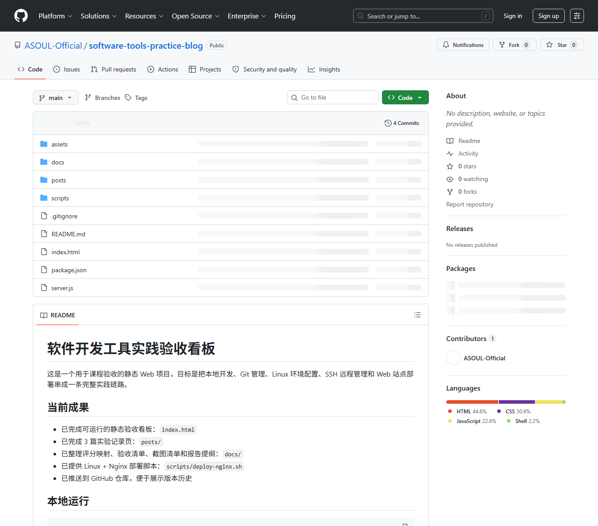

实验目标
建立一个结构清晰、可版本追踪、可远程协作的课程实践项目。项目不仅要能运行，还要能通过 Git 历史证明每一步配置过程。
关键操作
git init
git add .
git commit -m "init software tools practice blog"
git remote add origin https://github.com/ASOUL-Official/software-tools-practice-blog.git
git branch -M main
git push -u origin main后续每完成一个实验配置，都建议单独提交一次，提交信息直接写明完成内容。
验收证据


| 证据 | 说明 |
|---|---|
| GitHub 仓库页面 | 证明项目已远程托管，便于查看源码和文档。 |
git log --oneline |
证明项目存在阶段提交记录。 |
| VS Code 项目结构 | 展示 `assets`、`posts`、`docs`、`server.js` 等目录组织。 |
后续补充
- 补一张 VS Code 源代码管理面板截图。
- 补一张 GitHub 仓库文件列表截图。
- 补一张本地终端执行
git status和git log --oneline的截图。